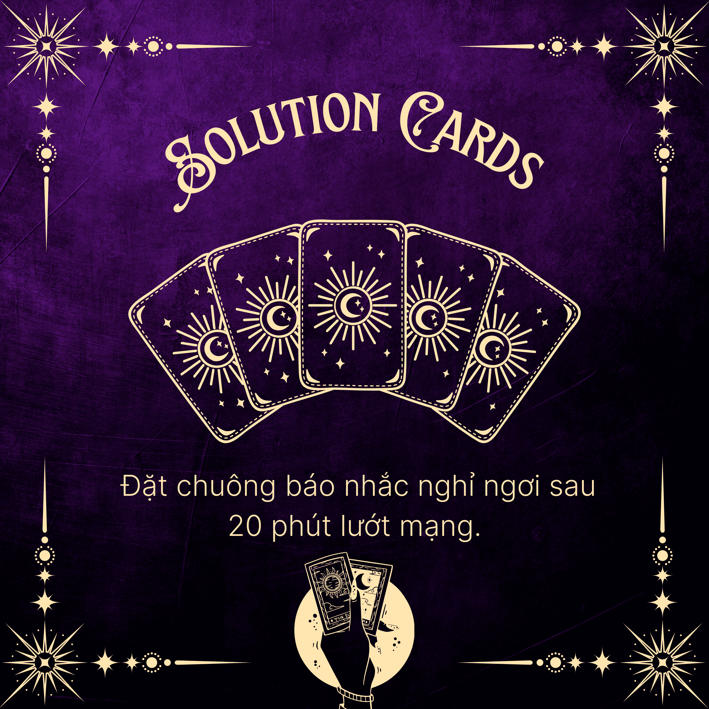
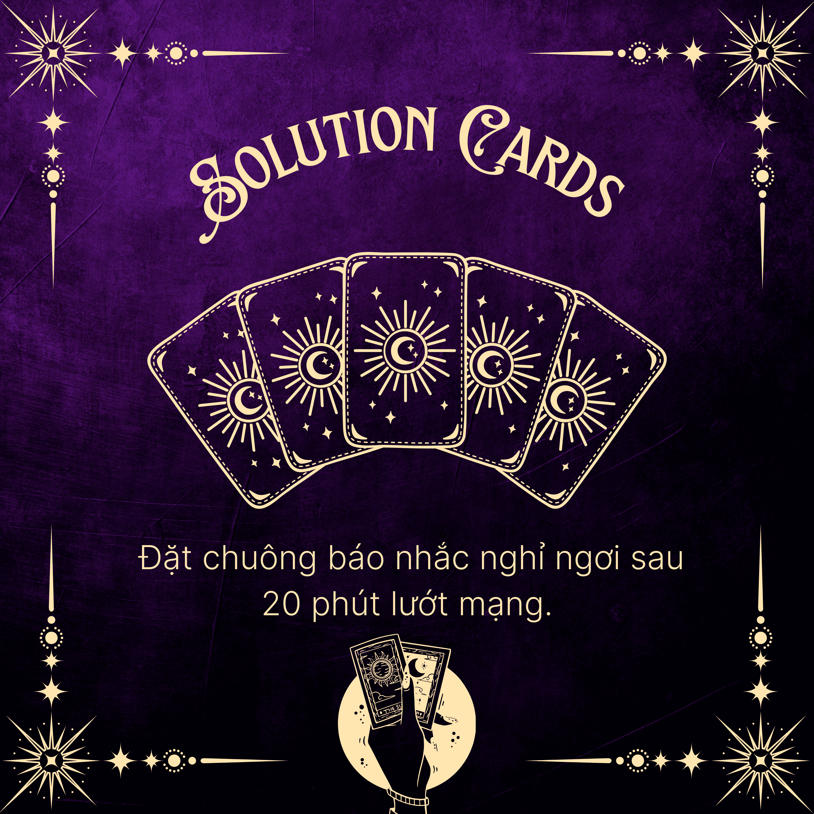

Các biện pháp can thiệp đảm bảo sẽ bám sát mục tiêu cốt lõi của dự án, tập trung vào giáo dục học sinh nhận diện đúng bản chất của hiện tượng ‘’ brain rot ‘’ và nâng cao năng lực tự điều chỉnh hành vi số. Các biện pháp phù hợp với tâm lý lứa tuổi, dễ áp dụng trong môi trường học đường, xuất phát từ thực trạng sử dụng mạng xã hội hiện nay. Đồng thời, cần phát huy vai trò phối hợp giữa nhà trường, gia đình và xã hội nhằm giúp HS sử dụng công nghệ một cách chọn lọc, tích cực, hạn chế sự lệ thuộc vào các nội dung số gây xao nhãng, suy giảm nhận thức.
Bộ Reflection Card và Solution Card được thiết kế nhằm giúp người dùng nhận diện những thói quen hằng ngày có thể dẫn đến hiện tượng Brain rot, đặc biệt là việc tiêu thụ nội dung số một cách thiếu kiểm soát.
Thông qua các câu hỏi gợi mở và giải pháp đơn giản, bộ card khuyến khích người dùng chậm lại, suy ngẫm về cách sử dụng thời gian và sự tập trung, từ đó từng bước hình thành những thay đổi tích cực trong đời sống số.
1. Người dùng rút hoặc chọn một Reflection Card để đọc và suy ngẫm về câu hỏi được đặt ra.
2. Dành vài phút để tự nhìn lại thói quen, hành vi hoặc cảm xúc của bản thân liên quan đến việc sử dụng mạng xã hội và thiết bị số.
3. Tiếp theo, rút hoặc chọn một Solution Card để tham khảo giải pháp được gợi ý.
4. Người dùng có thể áp dụng trực tiếp, điều chỉnh cho phù hợp với bản thân hoặc coi đó như một lời nhắc nhở nhẹ nhàng.
5. Card có thể được sử dụng mỗi ngày, bất cứ khi nào bạn cảm thấy mất tập trung hoặc cần một khoảng dừng để tái kết nối với chính mình.
 

- Mục tiêu: Giảm thói quen tiêu thụ nội dung ngắn độc hại, hình thành thói động: đọc blog, nghe podcast, viết thư tay, thể thao, chơi nhạc cụ.
- Nội dung triển khai: Thử thách 14 ngày thay thế mạng xã hội bằng hoạt
- Cách thực hiện:
+ Phát động chiến dịch, kêu gọi tham gia.
+ Hướng dẫn lựa chọn hoạt động thay thế.
+ Ghi nhật ký hằng ngày về hoạt động, mức độ tập trung, tâm trạng.
+ Tổng kết, triển lãm nhật ký, trao giải, khuyến khích duy trì.
- Đánh giá: So sánh mức độ sử dụng g mạng xã hội trước – sau, quan sát thay đổi trong hành vi và tinh thần.

- Mục tiêu: Rèn luyện khả năng tập trung, giảm căng thẳng và hạn chế lệ thuộc công nghệ.làm bài tập không dùng thiết bị…
- Nội dung triển khai: Thực hành thiền ngắn, ăn uống chánh niệm, đọc sâu.
- Cách thực hiện:
+ Giới thiệu chánh niệm – đơn nhiệm bằng video, trò chơi, thẻ bài.
+ Tổ chức trải nghiệm: thiền 3 phút, đọc sách sâu, ăn uống chánh niệm. + Học sinh ghi lại cảm nhận sau mỗi lần thực hành.
+ Tổ chức chia sẻ kinh nghiệm, lan tỏa thay đổi tích cực. - Đánh giá: Dùng nhật ký trải nghiệm của các bạn học sinh và phỏng vấn nhóm để đo sự thay đổi cảm xúc, mức độ tập trung.